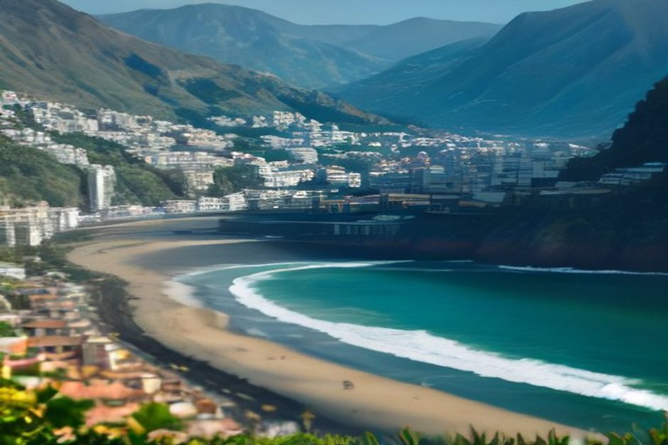

Madeira, que l'on écrit Madère en français, est une île portugaise de l'Atlantique. On y parle donc portugais. Mais pour un voyageur venu de France, de Belgique ou de Suisse, la vraie question est plus simple : va-t-on se faire comprendre ? Oui, presque partout, surtout en anglais, et avec quelques mots de portugais en poche.
Où se trouve Madère, et pourquoi y parle-t-on portugais ?
L'île de Madère appartient au Portugal. Elle se trouve en plein Atlantique, plus près des îles Canaries que du continent portugais, ce qui trompe parfois les visiteurs. Sa capitale est Funchal, où se situe aussi la marina de nos départs en bateau. On y paie en euros, et l'heure est celle du Portugal : une heure de moins qu'en France.
La langue du quotidien est le portugais, dans sa version madérienne. L'accent, le rythme et l'argot sont propres à l'île, au point que des Portugais du continent la suivent parfois difficilement quand on parle vite. Entre eux, les habitants parlent portugais, y compris ceux qui passent à l'anglais sans effort avec les touristes.
Parle-t-on anglais à Madère ?
Oui, et c'est la langue de secours la plus fiable. Le tourisme est la première industrie de l'île, qui reçoit chaque année plus de visiteurs qu'elle ne compte d'habitants. Réception d'hôtel, serveurs, caisses des musées, loueurs de voitures, organisateurs d'excursions, équipages de bateaux : tous travaillent en anglais comme si c'était normal.
À Funchal, vous n'avez pas besoin de préparer un guide de conversation pour prendre un café, réserver une table ou demander votre chemin.

Et le français, peut-on compter dessus ?
Un peu, mais il vaut mieux ne pas en faire votre plan principal. Dans les zones touristiques, certains menus sont imprimés en plusieurs langues, souvent avec l'allemand ou le français en plus de l'anglais. Quelques personnes du secteur touristique se débrouillent en français, mais ce n'est pas une garantie.
Notre conseil : commencez par un bonjour en portugais, puis demandez poliment si l'on parle anglais ou français. Si votre anglais est scolaire, ce sera suffisant. Les échanges du voyage sont simples, ils tournent autour de l'heure, du prix et de l'adresse.
Madère, c'est du portugais ou de l'espagnol ?
Du portugais, sans hésitation. Certains pensent que l'espagnol suffira parce que l'île est proche des Canaries : ce n'est pas fiable. L'espagnol n'est pas une langue officielle à Madère et il n'est pas utilisé dans le tourisme comme l'est l'anglais. Si vous ne parlez pas portugais, l'anglais vous mènera plus loin que l'espagnol.
Menus, panneaux, réservations : à quoi s'attendre
À Funchal et dans les villes touristiques de la côte, les menus sont bilingues, parfois trilingues, et la plupart des panneaux (sites, transports, parkings) incluent l'anglais. Les sites de réservation, les messageries et les guichets fonctionnent aussi en anglais par défaut, car une grande part de la clientèle vient du Royaume-Uni, d'Allemagne et de Scandinavie. Confirmations, points de rendez-vous et consignes sont donc rédigés en anglais, sans rien à traduire avant d'arriver.
L'exception : les petites tascas purement locales, loin des rues touristiques. Le menu peut n'y exister qu'en portugais. Demandez, le personnel vous l'expliquera en général, au besoin avec les mains.
Taxi, guide, skipper : ils parlent anglais
Toute personne autorisée à travailler directement avec les touristes (chauffeurs de taxi et de transfert, guides agréés, plongée, bateaux) a besoin d'un anglais fonctionnel, et la plupart reçoivent chaque semaine des clients britanniques, allemands ou scandinaves.
Lors d'une sortie en bateau privé avec Chifbay, nos skippers, tous deux originaires de Madère, présentent la sortie en anglais, du briefing de sécurité jusqu'aux endroits de la côte à regarder. Si une question vous échappe, un geste ou un sourire fait le reste. Pour découvrir les formules, rendez-vous sur la page des expériences.
Quand l'anglais devient plus rare
En dehors de Funchal, cela varie davantage. Dans les petits villages de l'intérieur, ceux que l'on traverse en marchant le long d'une levada ou en montant vers le Pico do Arieiro, les personnes âgées parlent peu ou pas anglais, et les cafés familiaux peuvent être uniquement en portugais.
C'est là qu'un sourire, de la patience et un doigt pointé sur le menu font des merveilles. Les moins de 40 ans environ, ou toute personne liée de près ou de loin au tourisme, s'en sortent presque toujours.
Cinq mots de portugais qui font plaisir
Inutile d'être bilingue. Quelques mots couvrent presque tous les échanges, et on les remarque :
- Bom dia / Boa tarde : bonjour le matin / bon après-midi, la salutation de base
- Obrigado (si vous êtes un homme) / Obrigada (si vous êtes une femme) : merci
- Por favor : s'il vous plaît
- Fala inglês? : parlez-vous anglais ?
- A conta, por favor : l'addition, s'il vous plaît
Les habitants apprécient l'effort, même quand ils repassent aussitôt à l'anglais pour vous faciliter la vie. Le portugais écrit ressemble parfois au français, ce qui aide pour déchiffrer un menu, mais à l'oral, il est plus difficile à comprendre : ne comptez pas dessus.
Réserver une sortie en mer sans parler portugais
C'est possible et simple. Nos sorties partent de la Marina do Funchal, ponton C, et tout se règle à l'avance. La sortie à la journée part à 10 h ou 14 h : 2 h 30 jusqu'à Ribeira Brava pour 500 EUR, ou 3 h jusqu'à Ponta do Sol pour 600 EUR, avec Câmara de Lobos, Cabo Girão, une baignade et des paddles à la Fajã dos Padres. La sortie coucher de soleil part 1 h 15 avant le coucher du soleil, toute l'année : 2 h jusqu'à Cabo Girão pour 400 EUR, ou 2 h 30 jusqu'à Ribeira Brava pour 500 EUR, sans arrêt baignade.
Les prix sont pour tout le bateau, jamais par personne, pour un seul groupe de 5 personnes au maximum. Repas et boissons à bord, vidéo 360° Insta360, images au drone si la météo le permet et photos prises avec un vrai appareil sont inclus. Annulation gratuite jusqu'à 24 heures avant le départ. Retrouvez tous les détails sur la page infos pratiques, ou comparez avec notre guide des excursions en bateau à Madère et les avis de nos clients.
Madère fait tourner son tourisme en anglais mais vit en portugais, et ce mélange est en partie ce qui rend l'île authentique plutôt que fabriquée pour les visiteurs.
En résumé : réservez, mangez et déplacez-vous en anglais sans hésiter, dites bom dia et obrigado/a, et considérez ces quelques mots de portugais comme un bonus plutôt qu'une nécessité.